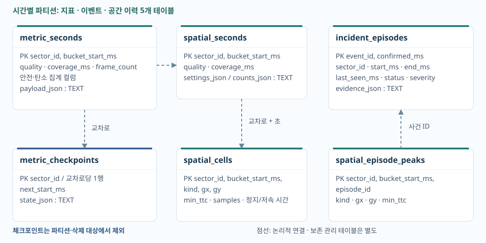
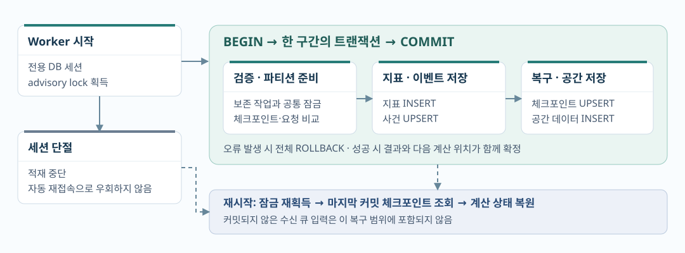
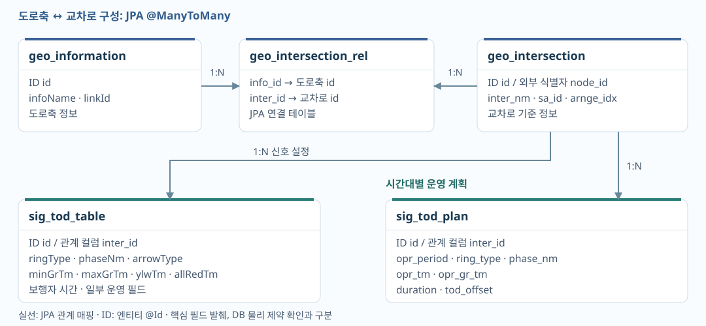
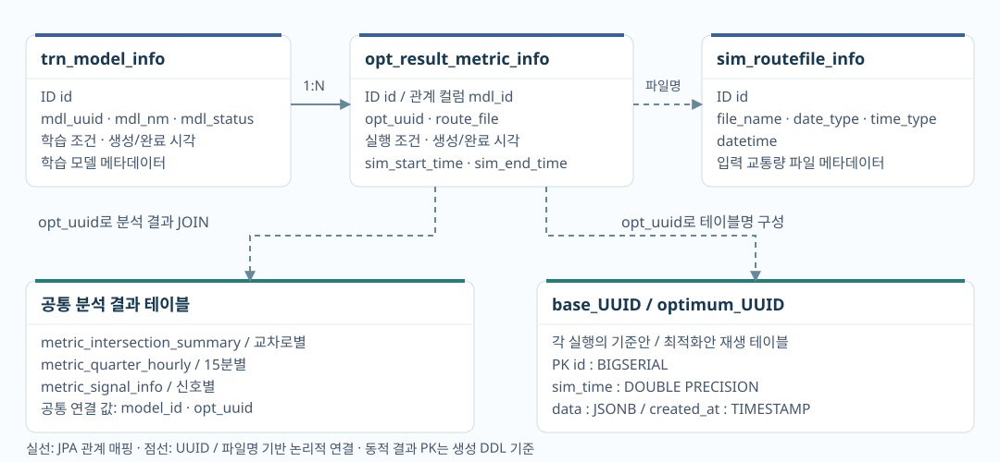

교차로와 시간을 기본키로 사용
metric_seconds에 교차로별 지표를 1초 단위로 저장합니다. 기본키는 (sector_id, bucket_start_ms)입니다. 조회할 때도 교차로와 시간 범위로 검색한 뒤 집계합니다. quality와 coverage_ms에는 수집 상태를 기록합니다.
DB 설계
V2X와 도시 교통신호 최적화 시스템 설계한 DB 구조와 저장 방식을 정리했습니다.
차량 관측 데이터로 교통 안전·탄소 배출·위치별 지표를 계산합니다. 처음에는 SQLite에 저장했고, 이후 PostgreSQL로 바꿔 운영 서버에 적용했습니다.
교차로별로 기간을 지정해 지표와 위험 이벤트를 조회해야 했습니다. 데이터가 수신되지 않은 시간도 구분할 수 있어야 했습니다.

metric_seconds에 교차로별 지표를 1초 단위로 저장합니다. 기본키는 (sector_id, bucket_start_ms)입니다. 조회할 때도 교차로와 시간 범위로 검색한 뒤 집계합니다. quality와 coverage_ms에는 수집 상태를 기록합니다.
위험 이벤트는 여러 초 동안 이어질 수 있어 incident_episodes에서 마지막 감지 시각·종료 시각·위험도를 갱신합니다. 위치별 지표와 사건별 대표 위치도 따로 저장해, 15분 단위 조회에서 같은 사건을 중복 집계하지 않도록 했습니다.
충돌예상시간과 배출량은 컬럼에 저장해 SQL로 집계합니다. 상세 계산 결과는 payload_json, 재시작에 필요한 계산 상태는 state_json에 저장합니다. 두 JSON 컬럼의 타입은 TEXT입니다. 컬럼과 JSON에 겹치는 값은 같은 저장 코드에서 함께 생성합니다.
코드 근거 · repository.py / spatial_store.py / window_aggregator.py / retention.py
재시작할 때 어디까지 계산했는지 알아야 합니다. 이를 기록하는 체크포인트와 지표를 함께 저장해, 지표는 저장됐는데 처리 위치는 이전 상태로 남는 일을 막았습니다.

DB 세션의 advisory lock을 사용해 Worker 하나만 저장하도록 했습니다. 연결이 끊기면 저장을 중단합니다. Worker를 다시 시작하면 잠금을 획득하고 마지막으로 커밋된 체크포인트를 읽습니다.
같은 체크포인트가 들어오면 상태 JSON, 지표와 이벤트가 이미 저장된 내용과 같은지 확인합니다. 이전 시점의 요청이나 내용이 다른 요청은 거부합니다. 교착 등 재시도 가능한 DB 오류는 트랜잭션 전체를 최대 3회 시도합니다.
# MetricWriteRepository._save 흐름 요약
with connection.transaction():
# 보존 작업과 같은 트랜잭션 잠금 획득
# 이전 체크포인트 검증, 필요한 파티션 준비
# 초 단위 지표 INSERT
# 이벤트 UPSERT
# 체크포인트 UPSERT
save_spatial(connection, bucket)
# 위 작업이 함께 COMMIT된 뒤 성공 반환이벤트 기본키는 (event_id, confirmed_ms)입니다. 같은 이벤트의 확정 시각이 바뀌지 않도록 저장 전에 검사합니다.
코드 근거 · MetricWriteRepository._save / SequentialMetricWorker.advance / ThreadedMetricWorker / WindowAggregator.restore
계속 늘어나는 DB 용량을 관리하기 위해 이력 테이블을 1시간 단위 파티션으로 나눴습니다. 용량이 기준을 넘으면 오래된 파티션부터 삭제합니다.
10진 GB 기준 · DB 전체 용량을 60초마다 확인 · 한 번에 약 20초 동안 정리
지표·이벤트·공간 이력 테이블 5개를 UTC 1시간 단위로 나눴습니다. 같은 시간대의 파티션 5개를 한 트랜잭션으로 삭제합니다. 삭제한 시간대는 관리 테이블에 기록해 다시 생성하지 않습니다.
최신 체크포인트가 가리키는 구간, 최신 파티션, 현재 이후 시간대, 종료되지 않은 이벤트가 있는 구간은 삭제하지 않습니다. 체크포인트 테이블도 삭제 대상에서 제외했습니다.
저장과 파티션 삭제는 같은 DB 잠금을 사용합니다. 잠금을 얻지 못하면 삭제를 미룹니다. 정리는 별도 스레드에서 실행해 실패해도 수집을 계속합니다. 반복 갱신되는 체크포인트에는 autovacuum과 일반 VACUUM을 적용했습니다.
| 항목 | 확인 내용 |
|---|---|
| 로컬 가속 테스트 | 합성 입력 7,500초 분량을 약 34.25초에 처리했습니다. 지표 7,500행, RSS 38.3~38.82MB, DB 연결 최대 2개를 기록했습니다. 실제 2시간 연속 운영 테스트와는 다릅니다. |
| 테스트 코드 | 파티션 전환·롤백, 중복 저장, 진행 중 이벤트 보호, 저장·삭제 충돌과 재시작을 검사하는 코드가 있습니다. 이번 문서 수정에서는 DB 테스트를 다시 실행하지 않았습니다. |
| 운영 적용 | PostgreSQL 전환을 운영 서버에 적용했습니다. 전환 전후의 성능 비교 자료는 확인하지 못했습니다. |
코드·기록 근거 · retention.py / RetentionPolicy / test_retention.py / soak-results-accelerated.jsonl
DB 설계와 Java/Spring 서버 개발을 담당했습니다. 도로축에 속한 교차로를 조회하고, 교차로별 신호 설정과 시간대별 운영 계획을 가져오도록 테이블을 구성했습니다.

도로축은 geo_information, 교차로는 geo_intersection에 저장하고 geo_intersection_rel로 연결합니다. 같은 교차로가 여러 도로축에 속할 수 있는 구조입니다. DB 내부 ID와 시뮬레이터의 node_id도 구분했습니다.
sig_tod_table에는 최소·최대 녹색시간, 황색·전적색시간 등을 저장합니다. sig_tod_plan에는 시간대별 운영 시간·주기·오프셋을 저장합니다. 일부 필드는 중복되지만, 조회 시 시간대별 운영 시간은 계획 테이블에서 가져옵니다.
같은 1번 Phase라도 Ring A와 B는 다른 신호입니다. 교차로와 시간대를 고른 뒤 A-1, B-1처럼 키를 만들어 운영 시간을 찾습니다. 화면에 표시할 녹색시간은 운영 시간에서 황색·전적색시간을 빼서 계산합니다.
Ring-Phase는 조회 코드에서 사용하는 키입니다. 같은 키가 중복되면 먼저 읽은 값을 사용하므로, 중복 데이터 검증은 추가로 필요합니다.
코드 근거 · GeoInformationEntity / GeoIntersectionEntity / SigTodTableEntity / SigTodPlanEntity / TODService
하나의 학습 모델로 여러 번 시뮬레이션을 실행할 수 있습니다. 모델 정보와 실행 이력을 연결하고, 각 실행의 차량 재생 데이터와 분석 결과를 따로 저장했습니다.

trn_model_info와 opt_result_metric_info를 mdl_id로 연결합니다. Java에서 실행 요청을 먼저 저장하고, Python 응답을 받으면 작업 UUID를 갱신합니다. 이 UUID로 분석 결과와 실행별 테이블을 찾습니다.
base_UUID와 optimum_UUID에 시각(sim_time)과 차량 상태(data JSONB)를 저장합니다. 같은 시각의 두 결과를 조회해 비교 재생합니다. 교차로별·15분별·신호별 분석 결과는 공통 테이블에서 실행 UUID로 조회합니다.
모델·실행 이력은 JPA로 관리합니다. 실행마다 이름이 달라지는 결과 테이블은 JdbcTemplate으로 조회·삭제합니다. 삭제할 때는 실행 UUID를 먼저 읽고, 결과 테이블과 분석 데이터를 정리한 뒤 실행 이력을 지웁니다.
코드 근거 · TrnModelInfoEntity / OptResultMetricInfoEntity / OptiService / DynamicTableRepository / FcdStreamService / opti_main.py / sumo_postprocessor.py
V2X는 교차로와 시간을 기준으로 저장·조회하고, 도시 교통신호 최적화 시스템은 모델과 실행 ID를 기준으로 결과를 관리합니다.
| 설계 기준 | V2X | 도시 교통신호 최적화 시스템 |
|---|---|---|
| 기본 단위 | 교차로 × 초 단위 관측 사건별 상태 · 복구 체크포인트 |
도로축 · 교차로 · 신호 계획 학습 모델 · 실행 이력 |
| 주요 조회 | 교차로별 시간 범위 집계 격자별 위험도 · 발생 빈도 |
실행별 기준안·최적화안 비교 시점 재생 · 분석 보고서 |
| 상세 데이터 | 집계 컬럼 + JSON 문자열(TEXT) 계산 결과와 상태 복원 |
관계형 메타데이터 + 재생 JSONB 공통 분석 테이블 |
| 정리 단위 | 시간별 파티션 복구 위치·진행 중 사건 보호 |
실행별 동적 테이블과 분석 행 UUID 확인 후 메타데이터 정리 |
아래 항목은 아직 구현하거나 검증하지 않은 개선 과제입니다.
도시 교통신호 최적화 시스템의 결과 생성 SQL에는 sim_time·opt_uuid 조회용 인덱스가 없습니다. 운영 DB의 인덱스와 실행 계획을 확인하고, 신호 계획의 중복 데이터도 검사할 필요가 있습니다.
실행별 테이블 대신 실행 ID·기준안/최적화안 구분·시각을 컬럼으로 둘 수 있습니다. 실행 수가 늘어날 때 두 방식의 조회·삭제 비용과 관리 부담을 비교해볼 수 있습니다.
Python 요청 실패는 주로 로그로 남기고, 일부 삭제 오류는 잡은 뒤 다음 처리를 계속합니다. 실패 상태를 저장하고 재시도 기준을 정해야 합니다. 테이블명을 만들기 전 UUID 형식 검사도 필요합니다.